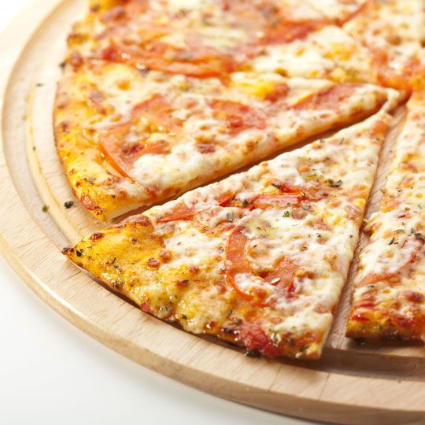

Cheese & Tomato Pizza

Easy Cheese & Tomato Pizza
Easy to make cheese & tomato pizza receipe that the whole family will enjoy!
Ingredients
- 150 ml Water warm
- 1 tsp Sugar
- 1 tsp Yeast
- 1 tsp Salt
- 1 tbsp Olive Oil
- Pizza Sauce
- 100g Mozarella Cheese
Instructions
- In a small bowl mix the warm water with the sugar and yeast and leave to rest for 10 minutes to allow the yeast will activate – when the yeast has activated the mixture should be foamy and there should be small bubbles forming at the top
- In a large bowl add the flour, salt, olive and the yeast mixture then mix until combined before transferring to the worktop and kneading for a further 8-10 minutes
- Oil the bowl and transfer the dough into it then cover the dough with clingfilm and leave to rest for at least 1 hour to allow it to rise – preferably overnight to allow the yeast to ferment and create more flavour
- When the dough has proofed flour the worktop sparingly and transfer the dough on then kneed for 2-3 minutes
- Split the dough into two equal parts and create a smooth ball with each part – at this point it is also a good time to turn on the oven 200°C (400°F) gas mark 6 to allow it to preheat
- With each dough ball use your hands to press down and outwards to create a circular base – do not use a rolling pin as this will push all the air out giving a tough base
- Transfer the pizza bases onto 12-inch pizza pans
- Use a ladle to spread the pizza sauce leaving approximately 1cm around the edge to create a crust then add the cheese – if you would like to add more toppings then add them on top of the cheese now
- Bake at the top of the oven for 10-15 minutes until the cheese is golden brown
- Serve with crispy French fries and enjoy!
Return to home page